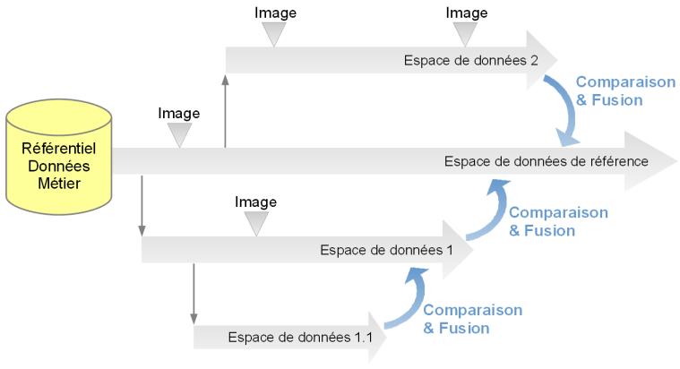
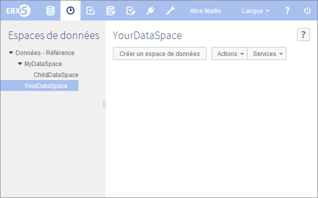

Introduction aux espaces de données
Un espace de données est un récipient de données, dont le contenu peut être mis à jour en toute isolation, c'est-à-dire sans affecter les données situées à l'extérieur de celui-ci. Après avoir décidé comme vous souhaitez organiser vos données, vous pouvez être amené à :
créer des espaces de données (voir création),
les étiqueter et en décrire le contenu et l'utilité (voir information),
exporter ou importer un jeu de données dans l'espace de données, puis valider ce changement (voir import d'archive ou export archive),
comparer le contenu de deux espaces de données (voir actions),
prendre une image de l'espace de données avant d'y appliquer tout autre changement (voir image),
appliquer les mêmes changements d'un espace de données fils à son parent (voir fusion),
gérer les droits d'accès à un espace de données (voir permissions),
fermer un espace de données, qui n'est plus requis (voir fermeture).
Un espace de données est toujours créé à partir d'un autre espace de données, à l'exception de l'espace de données de référence, qui est la racine de tous les autres espaces de données.
Pour une meilleure compréhension, n'hésitez pas à chercher un mot dans le glossaire.
Contenu de la section
Concepts
Le cycle de vie des données est souvent complexe. Par exemple, une entreprise a besoin d'avoir une version courante de ses données tout en travaillant sur des évolutions futures. De plus, cette entreprise a besoin de conserver une trace de ses évolutions.
EBX5 permet de créer et gérer plusieurs espaces de données ainsi que des images. Il est possible, en utilisant des espaces de données, de faire des modifications simultanées dans un même référentiel, de les comparer et de les fusionner.
Une image permet de prendre un instantané d'un espace de données afin de conserver une version des données et de pouvoir détecter des modifications ultérieures.

Vue d'ensemble d'un espace de données
Modalités d'accès dans l'interface
Le panneau de navigation affiche l'organisation hiérarchique des espaces de données existants, tandis que l'espace de travail est utilisé pour interagir avec l'espace de données sélectionné, dont il liste les images prises. Pour gérer vos espace de données, sélectionner Espace de données dans la barre de menu.

Concepts et outils associés
Intanstané | Photographie du contenu d'un espace de données à un instant t. |
Espace de données Référence | Ancêtre de tous les autres espaces de données, n'ayant pas de parent et ne pouvant être fusionné. |
Fusion | Copie de changements fait sur un espace de données fils vers son parent, qui requiert l'arbitrage de l'utilisateur en cas de conflits. |
Espace de données relationnel | Un espace de données relationnel est réservé aux modèles de données en mode relationnel. Dans ce mode, la gestion des données est d'avantage déléguée à la base de données et certaines fonctionnalités ne sont pas disponibles : par exemple, il n'est pas possible de créer une image ou un espace de données fils. |
 Sommaire du guide utilisateur
Sommaire du guide utilisateur